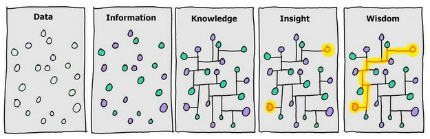
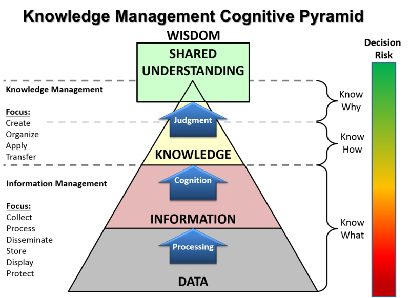
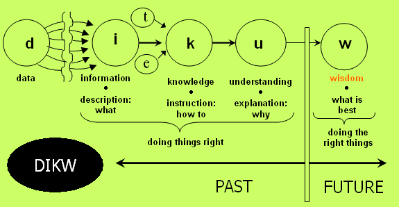
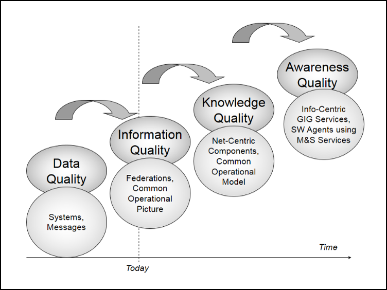
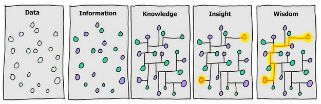
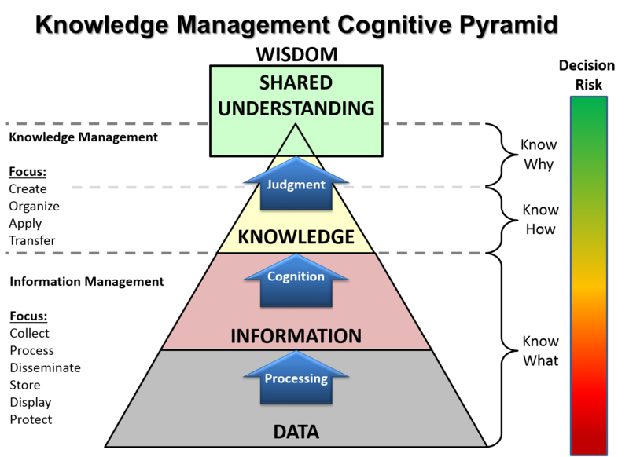
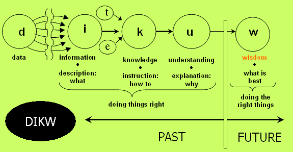
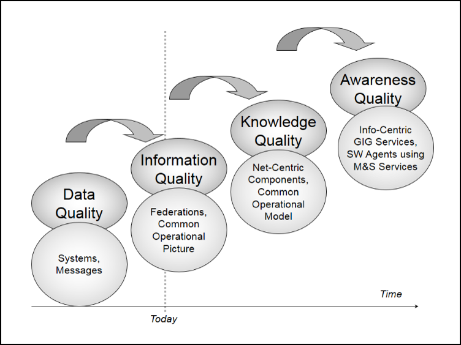

有趣的理论或模型
冰山
长尾
交叉什么鬼，个人需求与公司需求
mvp
DIKW模型
DIKW模型 是一个可以很好的帮助我们理解数据（Data）、信息（Information）、知识（Knowledge）和智慧（Wisdom）之间的关系的模型，这个模型还向我们展现了数据是如何一步步转化为信息、知识、乃至智慧的方式。




DIKW模型 是一个可以很好的帮助我们理解数据（Data）、信息（Information）、知识（Knowledge）和智慧（Wisdom）之间的关系的模型，这个模型还向我们展现了数据是如何一步步转化为信息、知识、乃至智慧的方式。



